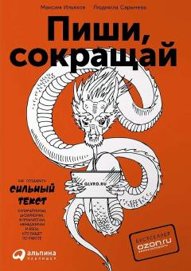

ПСMatn yozishda ortiqcha so'zlardan voz kechib, fikrni aniq va ta'sirli yetkazish qo'llanmasi.
Ushbu kitob matn yozishda ortiqcha so'zlardan qutulish, fikrni aniq va lo'nda ifodalash usullarini o'rgatadi. Mualliflar reklama, jurnalistika va ish yozishmalarida kuchli, ishonchli hamda tushunarli matn yaratish bo'yicha amaliy tavsiyalar berishadi.